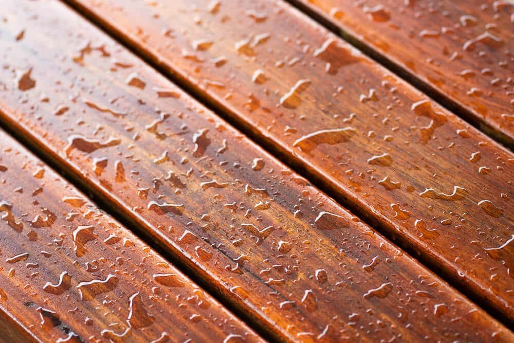
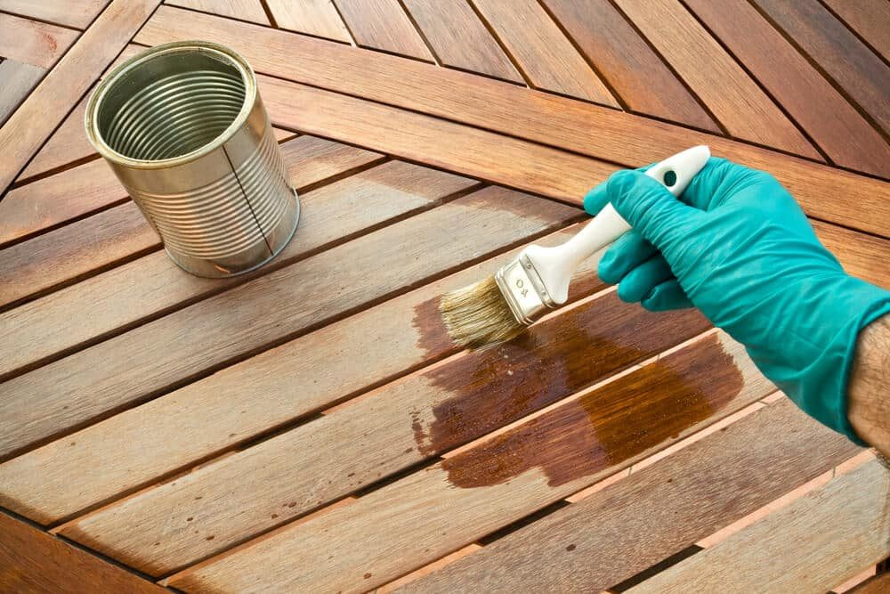

In This Guide
- Transparent, semi-transparent, and solid stains differ in how much grain they show and how much sun protection they give.
- Oil-based stains soak in deeply, while water-based stains dry faster and clean up with soap and water.
- Clean the wood, repair damage, and check that it is ready to absorb stain before you open the can.
- In Louisiana's humidity and sun, look for a product with water repellency, UV protection, and mildew resistance.
As a fence ages, its finish wears thin. Boards turn gray, color fades, and moisture starts to soak in. Staining is one of the most affordable ways to bring a wood fence back to life, and it protects the wood at the same time. The hard part is choosing from a wall of cans that all promise the same thing.
This guide from Big Easy Fence explains the main differences between fence stains so you can pick a product with confidence. It covers the types, what to look for on the label, how to prep a wood fence, and how to apply stain safely.
Types of Fence Stain
The biggest choice is how much pigment the stain carries. More pigment means more color and more sun protection, and less visible grain.
Transparent
A transparent stain, sometimes called a toner, has very little color. It lets the natural wood show through and gives a light warm tone. It also offers the least protection from the sun, so it usually needs to be reapplied most often.
Semi-Transparent
A semi-transparent stain adds noticeable color while still letting the grain show. It is one of the most popular choices for fences, since it balances looks and protection. One coat can lift a tired fence, and the wood grain comes through well.
Solid Color
A solid stain looks closer to paint. It hides the grain and covers blemishes on older boards, and it offers the most sun protection of the three. Because it forms more of a film, it can peel if moisture gets behind it, and repairing it means scraping and sanding.
| Stain Type | Look | Sun Protection | Reapplication |
|---|---|---|---|
| Transparent | Natural grain, light tone | Lowest | Most often |
| Semi-Transparent | Visible grain with added color | Moderate | Moderate |
| Solid Color | Paint-like, grain hidden | Highest | Least often, but harder to redo |
Oil-Based or Water-Based?
Oil-Based Stains
Oil-based stains soak deep into the wood and tend to give a rich, warm color. They take longer to dry and clean up with solvents, and they have a stronger smell. Many people like them for older, dry wood that soaks up finish quickly.
Water-Based Stains
Water-based stains dry faster, clean up with soap and water, and have less odor. Many are low in VOCs, the fumes that make some products unpleasant to use. They tend to sit a little more on the surface, and modern formulas hold up well outdoors when they are made for exteriors.
Check what is on the fence now before you buy. Some products will not bond well over an old finish that is still sealed, and the label will tell you what it works over.
Stain, Sealer, or Both?
Stain gives color and sun protection. A sealer protects against water. Many products combine the two in one can, which saves a step. If you use two separate products, follow the label on which goes first. For a fence in a wet, humid place, look for these features:
- Water repellency. Keeps rain from soaking into the boards and causing rot and warping.
- UV protection. Slows fading and graying from the sun.
- Mildew resistance. Helps keep mold and mildew from taking hold in damp, shaded spots.
- An exterior rating. Interior stains are not built for weather.
If you want to compare specific finishes, read our look at which fence sealers protect wood best.
Prep Work That Makes Stain Last
Clean the Wood
Stain needs bare, clean wood to grip. Wash off dirt, mildew, and old flaking finish, let the fence dry fully, and sand rough spots. Stain applied over grime peels and looks blotchy.
Repair First
Replace rotted boards, tighten loose fasteners, and fix leaning posts before you stain. Fresh finish will not hide structural damage. If the problems are bigger than a weekend job, our fence repair team can handle them.
Test the Wood

A quick water test tells you a lot. Sprinkle water on a board. On an old fence, if the water soaks in within a few minutes, the finish has worn off and it is time to restain. On new wood, if the water beads up, the boards are still too wet or sealed from the mill, and the stain may not soak in. Most labels give a wait time for new lumber, so read yours.
Picking a Color
Complement the House and Yard
Look at the colors around the fence, including the house, patio, shed, and plants. Aim for a color that harmonizes with them instead of clashing.
Think About the Fence Style
Classic tones such as rich brown, warm cedar, or redwood suit most privacy fences. A modern design may look sharp in a gray or a two-tone finish. For more ideas, see popular house and fence color combinations.
Follow Neighborhood Rules
Some homeowners associations set rules on fence color and finish, so check before you buy.
Let the Fence Support the Yard
A fence works best as a backdrop. If a pool, garden, or patio is the focus of your yard, pick a color that frames it instead of competing with it.
Applying Stain the Right Way
Brush, Roller, or Sprayer

A brush works stain into the grain and gives the most control, and it is best for detail work and gates. A roller speeds up flat areas. A sprayer covers a large fence fast, but it throws mist, so back-brush the surface as you go to even out drips and push the stain into the wood.
Weather and Timing
Choose a dry day with mild temperatures, and check the label for the range it allows. Avoid staining in direct midday sun, which can dry the surface too fast, and avoid days when rain is in the forecast. Louisiana humidity slows drying, so give coats extra time.
Safety and Cleanup

Wear gloves and eye protection, and follow the label for masks or respirators, especially if you spray. Cover plants, walkways, and nearby surfaces with drop cloths before you start, and keep pets and kids away until the finish is dry. If you use an oil-based product, lay used rags flat outdoors to dry or soak them in water before you throw them away, since oily rags can heat up on their own.
How Often to Restain
The answer depends on the product, the sun, and how much shade and moisture your fence gets. A fence in full sun tends to wear faster than one in shade. Instead of following a set calendar, use the water test each year. When water stops beading and starts soaking in, it is time to clean the fence and apply a fresh coat.
When to Call a Professional
A small fence is a good weekend project, but a long fence, a tall one, or one that needs boards and posts repaired first can be a lot of work. A professional can prep the wood, choose a finish that fits the fence, and get even coverage. If you are weighing staining against replacing, our residential fencing services include a free estimate so you can see both options side by side.
Need Help With a Wood Fence?
Whether it needs repairs first or a fresh finish, tell us what you are seeing and we will point you in the right direction.